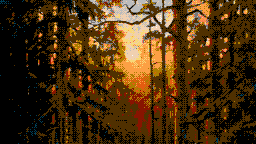

I'm a dad in Costa Rica who builds small, finished things. Most of them are about being reasonably safe, not perfectly safe: online, on the road and at home. The rest are about dancing.
The project list needs JavaScript. Everything is also on GitHub.